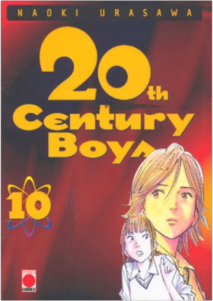
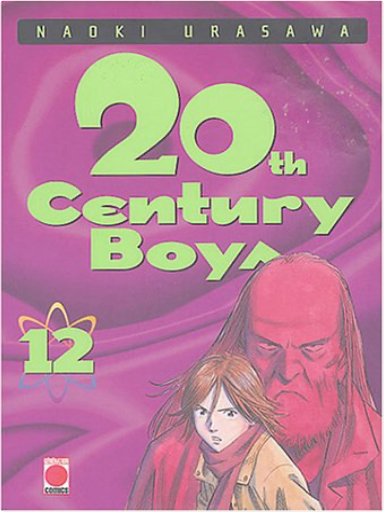
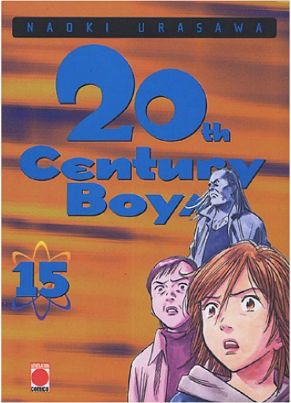
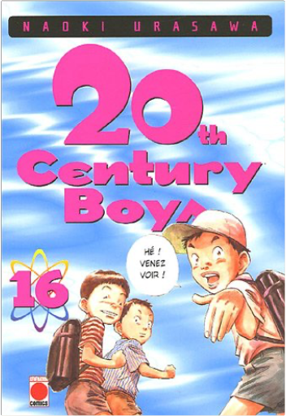

Books
Movies
Albums
Videogames
Games
BD
BD Camille
Blu-ray
Business
Camille
Comics
Cooking
Lego
Manga
Pauline
Photography
Sport
Star Wars
T'choupi
Travel
TV Shows
Un livre dont vous êtes le héro
Vinyl
Walt Disney
90
91
92
93
94

20th century boys, tome 10
naoki urasawa
20th century boys, tome 11
naoki urasawa

20th century boys, tome 12
naoki urasawa
20th century boys, tome 13
naoki urasawa
5
20th century boys, tome 14
naoki urasawa
5

20th century boys, tome 15
naoki urasawa

20th century boys, tome 16
naoki urasawa
20th century boys, tome 17
naoki urasawa
5
20th century boys, tome 18
naoki urasawa
20th century boys, tome 19
naoki urasawa
5
20th century boys, tome 20
naoki urasawa
5
20th century boys, tome 21
naoki urasawa
90
91
92
93
94


 Made with Delicious Library Made with Delicious Library
Made with Delicious Library Made with Delicious Library